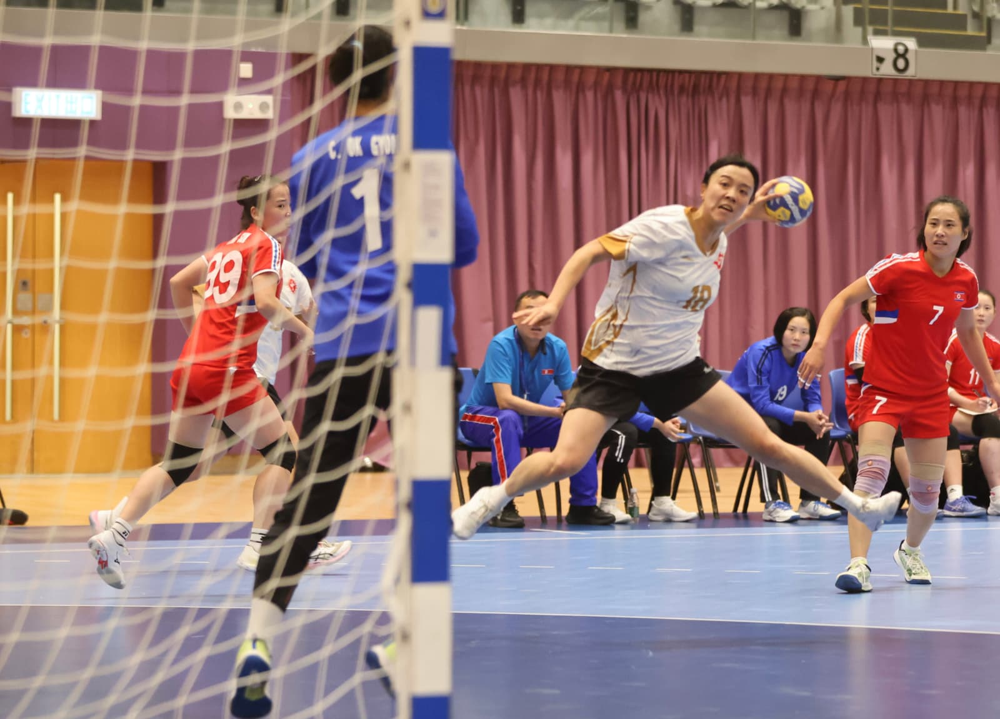

handball2026-10-17 13:20 · 中國香港手球總會
港女手今晚六點撼越南爭入挑戰盃決賽 馬鞍山免費入場
IHF 國際手球聯會挑戰盃今日上演四強賽事，主場出擊嘅香港女子手球隊將於今晚六點喺馬鞍山體育館迎戰越南，爭入決賽，市民可免費入場打氣。港隊上月先喺名古屋亞運以 26:23 擊敗過越南；本港首位手球職業球員鄔梨鈴揚言要再贏一場。今日另兩場：下晝一點澳門對蒙古，三點半朝鮮對中華台北。
首階段小組賽名次已經定出：中華台北以 41:11 大勝蒙古，朝鮮就以 47:10 擊敗中國澳門（澳門取得雙位數入球）。今日三場賽事時間：下晝一點澳門對蒙古爭排名，三點半由小組首名朝鮮對中華台北，壓軸六點就係香港對越南嘅四強大戰。
📍 馬鞍山體育館 · 免費入場
分享到 Facebook
資料來源：中國香港手球總會新聞稿（16/10/2026）。相片由中國香港手球總會提供。